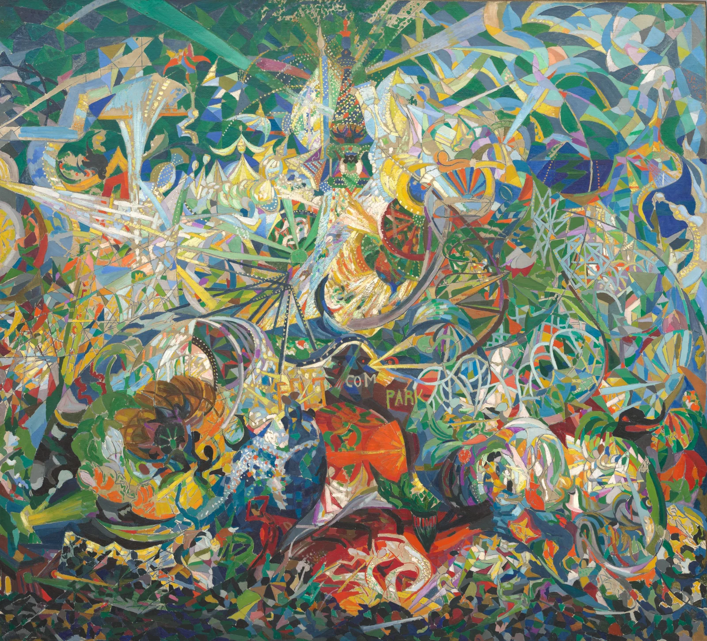

把喧嚣，画成光
弧线卷起夜色，灯点把人群与机器缝在一起。

1913–14 · 布面油画 · 195.6 × 215.3 厘米 · 1941.689
先别急着认出每一件东西。退后一点，让眼睛跟着那些弯曲的轨迹走：亮点在跳，色块在转，几乎没有一处真正停下来。今天想留住的，是这张画把“热闹”变成身体感受的能力。
构图｜目光没有唯一的终点
上方偏中的浅色束线像一个临时入口，视线随即被中央向下翻卷的弧带带走。左侧长斜线穿入，右侧格架与圆弧回接；底边的小碎形又把重心压住。这里没有一条可靠的地平线，近处和远处挤在同一片表面上。我们不断寻找中心，也不断被新的回路带离。
色彩｜冷色打底，让暖色发声
先看面积：蓝、青、绿反复铺开，形成冷色邻近色的连续场。再看局部：红橙色靠近蓝绿，黄亮点落进暗蓝与深绿，出现近互补色的张力。它不是规整的三原色示范；冷暖、明度和纯度同时在工作。浅蓝与乳白的高明度负责“闪”，深色碎面负责让闪光可见。
光影｜亮度是节奏，而非一个太阳
不要按单一光源寻找所有投影。浅色线带、成串小点和局部白面各自制造光感，像多个刺激在不同时间抵达眼睛。深色并不退成统一背景，而是插进亮部之间，把连续的运动切成短拍。这是我对画面光感的阅读，并非对现场灯位的复原。
技法｜碎面与点线，给速度不同的颗粒
馆方记录的媒材是布面油画。就这张数字图像可见的表面而言，平涂式色面、细线格架和密集点状笔触交替出现：大面建立方向，小点增加频率，弯带把碎片重新缠合。它兼有几何分割与旋转推进的视觉效果；这属于形式分析，不能仅凭复制图推断具体颜料、作画顺序或修复状态。
作者｜在城市里寻找新的观看方式
斯特拉的意大利出生背景与美国创作身份，为理解这幅城市画提供了一个入口。作品把可辨认的招牌残片、游乐设施轮廓与抽象色面放在一起。在我看来，他让一座游乐场成为观看方式的实验：我们接收城市，常常先接收到速度、闪烁与密度，随后才认出地点。
为何动人｜兴奋，也有一点失去平衡
最打动我的，是画面没有把欢乐整理得过于安全。明亮的颜色招手，缠绕的路径却让人短暂迷路。你可以在某段弧线里感到轻盈，也会被满幅密度压得喘口气。于是热闹有了两面：既想走进去，又需要站远一点。这种靠近与退后的摇摆，让百年前的游乐场仍贴近今天的感官生活。
带回日常｜让复杂有一根主线
做一张活动海报：先只画一条占画面约三分之二高度的 S 形路径，再沿它排三个大小不同的圆形；最后才补小点。配色练习可用 60% 深蓝绿 #184D50、25% 浅蓝 #9CBEC9、10% 黄 #E4BE58、5% 朱橙 #CD593B。把高明度集中在路径附近，其余细节降低对比。以上是编辑建议色与练习比例，不是原作测色，也不是对原作面积的统计。